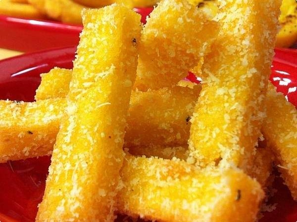

Polenta is yellow cornmeal that chefs cook with water, fresh herbs, and cheese
- 4 cups water
- 1 teaspoon salt
- 1 cup polenta
- 1 ¼ cup Parmesan cheese
- 2 tablespoons unsalted butter
- 1 cup olive oil
- In a large saucepan, bring the water and salt to a boil over high heat.
- Add the polenta, whisking at the same time. Continue to whisk until there are no lumps, fully incorporating the polenta.
- Add the polenta, whisking at the same time. Continue to whisk until there are no lumps, fully incorporating the polenta.
- Turn off the heat and stir in the Parmesan cheese and butter.
- Line a baking sheet with parchment paper or spray it liberally with cooking spray.
- Pour the hot polenta onto the baking sheet and spread it to the edges of the baking sheet.
- Chill the sheet until the polenta is cold and firm, about 60-90 minutes.
- Once chilled, cut the polenta into the desired size and shape.
- Heat olive oil in a non-stick skillet over medium heat. Add the polenta to the pan and fry it until it's golden brown and crispy, about 4 minutes per side. If the polenta is sticking to the pan, it's not ready to flip yet.
- Once cooked, serve fried polenta with the dipping sauce of your choice.